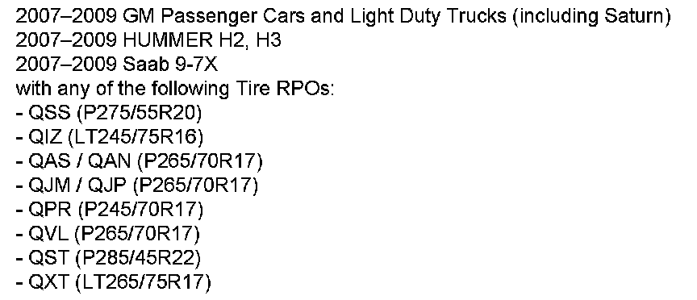

Wheels/Tires - Vibration While Driving
ENGINEERING INFORMATIONBulletin No.: 07-03-10-013D
Date: November 24, 2008
Subject:
EI07266 - Vehicle/Tire Vibration, P275/55R20, LT245/75R16, P265/70R17, P245/70R17, P285/45R22, LT265/75R17 Diagnostic Information to Reduce Vibration Concerns

Models
Supercede:
This bulletin is being revised to add model years. Please discard Corporate Bulletin Number 07-03-10-013C (Section 03 - Suspension).
Some customers may comment on a vehicle/tire vibration.
Diagnostic Information
Based upon feedback from dealers, GM engineering has made the following recommendations:
1. Before performing any repairs, duplicate the customer's concern AND test drive the vehicle for 16-24 km (10-15 mi) to properly warm up tires, and remove any temporary flat spots. Refer to Corporate Bulletin Number 03-03-10-007D.
2. Prior to taking any Road Force Variation (RFV) measurements, it is important to clean the inner wheel surface and remove any large stones from the tire tread. If the tire and wheel assembly is 1-10 lbs greater than GM guidelines for RFV, tire-to-wheel match mounting per Document ID # 1579478 should be attempted. Tire and Wheel Balancing Guidelines-Off Vehicle, refer to Document ID # 1579474, for on-vehicle balancing, refer to Document ID # 1579476.
3. Road Force Variation (RFV) guidelines can be found in SI. Refer to Information on Tire Radial Force Variation (RFV), Bulletin Number 00-03-10-006A.
4. If all assemblies can be balanced and RFV readings are within GM Guidelines, runout measurements should be taken to further assist in diagnosis.
5. If the tire is condemned, all findings (including Position on vehicle, out of balance, RFV and Runout) must be documented on the R.O. and Global Tire Warranty Return form (except Saab).
6. After installing a new tire, perform a Road Force Variation (RFV) test again to make sure the new tire assembly is within guidelines.
7. Remember that heavy-duty pickup trucks may vibrate when not under a load.
8. Refer to Corporate Bulletin Number 08-03-10-004 for GM guidelines on balancing weights. There is a maximum limit of 5 oz per flange.
9. Take measures to avoid flat-spotting by occasionally moving the vehicle while in storage, prior to delivery.

Disclaimer